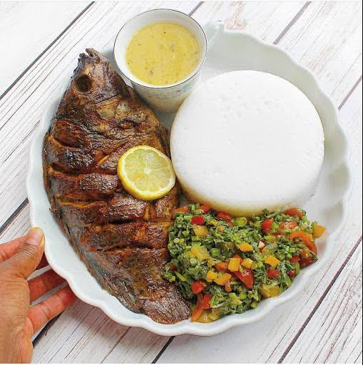

```html
Nsima
Nsima

Nsima is a staple Malawian dish made from maize flour and commonly
served with vegetables, beans, meat, or fish.
Ingredients
Instructions
- Add 1 litre of water to a cooking pot on a stove.
- Add 2 cups of flour as the water is heating.
- Gradually stir until the mixture turns into a well-boiling porridge.
- Cover the pot and let the porridge boil for 15–20 minutes.
- Add more flour and mix until the desired consistency is reached.
- Cover the pot and let it simmer for a few minutes.
- After a few minutes, your nsima is ready to serve.
Back to Recipes
```